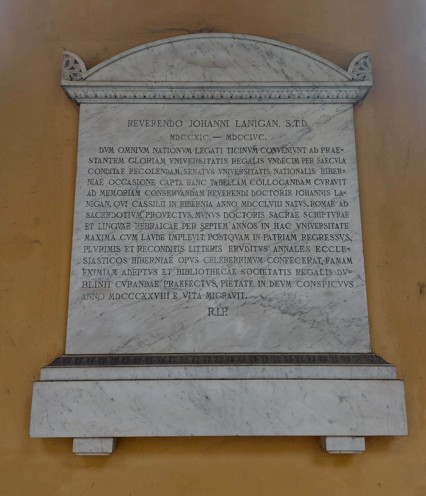

Ruolo: Storico e Teologo (1758–1828)

"Al reverendo John Lanigan, Dottore in Sacra Teologia (1758-1828). Mentre i delegati di tutte le nazioni si riuniscono a Pavia per rievocare l'insigne gloria dell'Università Regale, fondata undici secoli prima, il Senato dell'Università Nazionale d'Irlanda, colta l'occasione, ha curato la collocazione di questa targa per conservare la memoria del reverendo dottore John Lanigan. Egli, nato a Cashel in Irlanda nell'anno 1758, elevato al sacerdozio a Roma, adempì con massimo elogio per sette anni in questa Università all'ufficio di professore di Sacra Scrittura e lingua ebraica. Dopo essere tornato in patria, erudito in moltissime e ricercate discipline, portò a termine gli Annali Ecclesiastici d'Irlanda, opera celeberrima. Conseguita una fama straordinaria e nominato prefetto alla cura della biblioteca della Royal Dublin Society, distinto per la devozione verso Dio, lasciò questa vita nell'anno 1828. Riposa in pace."
"To the Reverend John Lanigan, Doctor of Sacred Theology (1758-1828). When the delegates from all nations gathered in Pavia to commemorate the outstanding glory of the Royal University, founded eleven centuries earlier, the Senate of the National University of Ireland, seizing this opportunity, has curated the placement of this plaque to preserve the memory of the Reverend Doctor John Lanigan. Born in Cashel, Ireland, in 1758, and elevated to priesthood in Rome, he fulfilled with the highest praise for seven years in this University the office of Professor of Sacred Scripture and Hebrew Language. After returning to his homeland, erudite in vast and recondite disciplines, he completed the Ecclesiastic History of Ireland, a most celebrated work. Having achieved distinguished fame and having been appointed as Prefect in charge of the library of the Royal Dublin Society, noted for his devotion toward God, he passed from life in the year 1828. Rest in Peace. "